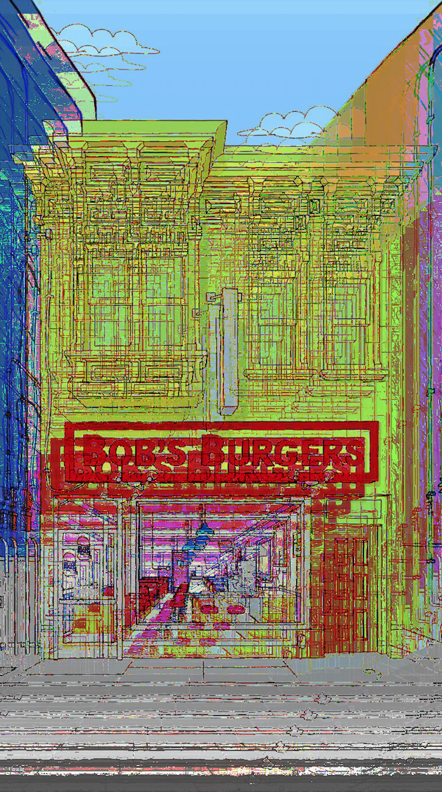

TOE-BEANS
GLITCH
MASH-UP
MINECRAFT
NET-ART
P5.JS
SELFIE
DIY
ORDER-UP
RUNWAY
SPADE COCO
AdaIN
FINAL PROJECT
GLITCH
unnamed anime girls no.1
Kakegurui - Compulsive Gambler is one of my favorite guilty pleasures, the animation is super stylish and slick. This image is by distorting by using textedit. The saturated colors that were produced from glitch is so chaotically harmonious!
Swap & ghost
Bob's Burgers has been the staple for my late night study background noise. I wanted to incorporate the Belcher family (excluding Gene) to my Audacity glitch.

Glitch Sweet Glitch
Another homage to Bob's Burgers, using the iconic Belcher's resident/restaurant. Quirky and all over all delightful best describes Bobs Burgers and the glitch results using Photoshop!
TOE BEANS